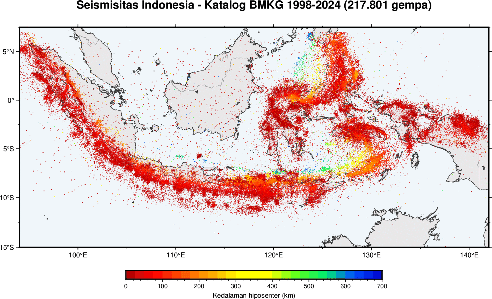
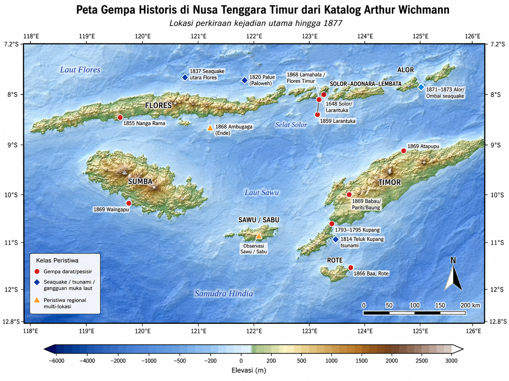

Diskusi Publik · PSBA UGM · 21 Agustus 2026
Indonesia adalah
rumah gempa.
217.801 gempa dalam 26 tahun. Pertanyaannya bukan apakah akan terjadi, tapi di mana, kapan, dan seberapa siap kita.
Dr.rer.nat. Wiwit Suryanto — Geoscience Research Group, Departemen Fisika, FMIPA UGM
1 / 10
Satu peta, satu pertanyaan
Setiap titik adalah satu gempa yang pernah mengguncang negeri ini

Sumber gambar: katalog BMKG · Kuliah Seismologi UGM
2 / 10
Flores · 15 Agu 2026
Perbesar: Nusa Tenggara Timur
Titik ini bukan kebetulan — ia bagian dari denyut kegempaan Indonesia
Busur Sunda–Banda · sesar naik busur-belakang Flores
3 / 10
Gempa Flores — 15 Agustus 2026
Apa yang terjadi, dalam angka
| Waktu asal | 05:58:21 WITA |
| Magnitudo | Mw 7,7 (USGS) · 7,61 (GFZ) |
| Kedalaman | 10 km — dangkal |
| Episenter | ±68 km BBL Ende, lepas pantai utara Flores |
| Mekanisme | Sesar naik (thrust) |
| Sumber | Flores Back-arc Thrust |
| Guncangan maks | MMI VIII · PGA 0,635 g (Kuwus) |
±73
korban jiwa · 1.182 luka · ±59.600 mengungsi
>2.768
gempa susulan hingga 19 Agu (terbesar M6,2)
2′16″
peringatan dini tsunami terbit setelah gempa
Sumber: BMKG · USGS · GFZ (data masih berkembang)
4 / 10
Sesar yang sama, berulang
Sesar naik busur-belakang Flores: sudah lama kita kenal
1992
Flores, Mw 7,8 — tsunami mematikan, ±2.500 korban. Pelajaran pahit pertama.
2018
Lombok, seri Mw 6,3–6,9 — segmen barat sesar yang sama. Data & analisis b-value kami.
2026
Flores, Mw 7,7 — pecah makin ke timur. Peristiwa yang kita bahas malam ini.
Pesan kunci
Ini bukan ancaman baru. Sesar naik di utara busur Nusa Tenggara berulang kali melepaskan
gempa besar. Yang bisa kita ubah bukan gempanya — tapi kesiapan kita.
Analog seismotektonik — Flores Back-arc Thrust
5 / 10
Sebelum era seismograf
Sejarah sudah mencatatnya — jauh sebelum kita bisa mengukurnya
1648
Solor–Larantuka — rangkaian gempa merusak paling awal tercatat di NTT; tembok Benteng Henricus runtuh.
1837
Laut utara Flores — gempa laut (seaquake) kuat dirasakan dari perahu.
1855
Nanga Rama, Manggarai — gelombang besar menerjang teluk (kandidat tsunami).
1868
Ambugaga, Ende — guncangan sangat keras ±2 menit di Flores tengah.
Catatan makroseismik historis — belum dapat diberi magnitudo atau dipastikan dari sesar yang sama.
Benang merah
Katalog Arthur Wichmann (hingga 1877) mencatat gempa, gempa laut, dan tsunami di Flores–NTT jauh sebelum ada seismograf. Sejarah sudah memperingatkan; 2026 menegaskannya. Ke depan, kesiapsiagaan bukan pilihan.
Sumber: A. Wichmann, katalog gempa Kepulauan Hindia (hingga 1877)
6 / 10
Peta gempa historis — katalog Wichmann
Jejak gempa & tsunami NTT tersebar luas — jauh sebelum 1877

Sumber: A. Wichmann, katalog gempa Kepulauan Hindia (hingga 1877)
7 / 11
72 jam pertama
Apa yang dikerjakan seismologi saat tanggap darurat
- Menit pertama — membaca "telegram" bumi. Gelombang P tiba lebih dulu, membawa lokasi, kedalaman, magnitudo, dan mekanisme dalam hitungan menit.
- ShakeMap. Dari satu sumber, kita petakan sebaran guncangan — menebak di mana kerusakan terparah sebelum laporan masuk, untuk mengarahkan SAR.
- Peringatan tsunami. Keputusan besar diambil di menit-menit awal (lihat: 2 menit 16 detik).
- Prakiraan gempa susulan. Melindungi penyintas dan relawan yang masuk ke bangunan retak.
Kecepatan vs ketelitian
Mw 7,7 (USGS) vs 7,61 (GFZ); 10 km vs 25 km. Magnitudo direvisi seiring data masuk — ini normal, bukan kesalahan. Publik perlu memahaminya.
Peran geofisika dalam rantai tanggap darurat
7 / 10
Rekaman langsung — GE.MMRI, Maumere
Guncangan yang meruntuhkan Pelabuhan Maumere, terekam ±104 km dari sumber

0,14 g
PGA (akselerometer)
1,9 cm/s
PGV puncak
- Jeda waktu asal → gelombang P (~15 dtk): gelombang butuh waktu menempuh 104 km.
- Rekaman ini "menyaksikan" runtuhnya terminal Pelabuhan Maumere — jembatan ke dampak struktural.
Data: GEOFON (GFZ) · workflow ObsPy internal
8 / 10
Dua pertanyaan yang paling ditanya warga
"Akan ada susulan yang lebih besar?"
- >2.768 susulan mengikuti pola peluruhan (hukum Omori): rapat di awal, mereda seiring waktu.
- Peluang susulan besar mengecil tiap hari — tapi tak pernah nol. Jangan masuk bangunan retak.
Pesan yang menyelamatkan
Untuk tsunami dekat-pantai, guncangan kuat itu sendiri adalah peringatan.
Jangan tunggu sirene atau pengumuman — segera evakuasi mandiri ke tempat tinggi.
1992: tsunami Flores tiba dalam hitungan menit. Waktu adalah nyawa.
Komunikasi risiko saat darurat
9 / 10
Yang bisa kita perbaiki
Indonesia timur butuh lebih banyak mata
- Kerapatan stasiun di NTT jauh di bawah Jawa → lokasi lebih tak pasti, respons lebih lambat.
- Seismometer biaya rendah & jaringan berbasis komunitas–sekolah — merapatkan pemantauan sekaligus membangun kesadaran.
- Penyebaran alat sementara pasca-gempa untuk memantau susulan & memetakan sesar aktif.
Penutup
Kita tak bisa mencegah gempa. Tapi setiap sensor tambahan dan setiap warga yang tahu harus
segera lari ke tempat tinggi memperbesar peluang kita selamat saat gempa berikutnya datang.
Dr.rer.nat. Wiwit Suryanto · Geoscience Research Group, Departemen Fisika, FMIPA UGM · Terima kasih.
Diskusi Publik PSBA UGM — Respons Tanggap Darurat Gempa NTT
10 / 10